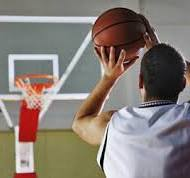

Види бросків в корзину
Кидок двома руками від грудей
Цей вид кидка активно застосовується для закидання м'яча в кошик переважно з дальніх дистанцій. Також такі кидки мають місце за відсутності активної протидії з боку захисника іншої команди. Під час підготовки до такого кидка м'яч обхоплюють пальцями обох рук, після чого виносять на рівень обличчя, під час випрямлення рук м'яч вирушає в кошик за заданою дугою. Якщо всі розрахунки гравця вірні, а кидок точний, то м'яч полетить прямо в кошик супротивників.
Передачи
Передача мяча — один из важнейших и наиболее технически сложных элементов баскетбола, самый главный элемент в игре разыгрывающего защитника. Умение правильно и точно передать мяч — основа чёткого взаимодействия баскетболистов в игре. Результативная передача (англ. assist) — пас на игрока, впоследствии поразившего кольцо соперника. Результативная передача учитывается в финальном протоколе. Пасующий отвечает за точность, своевременность, быстроту передачи, её неожиданность для соперников и за удобство обработки мяча. Уверенность при передаче мяча — очень важный фактор. Основные правила: «Не уверен — не отдавай» и «Виноват дающий». Игрок, передающий мяч, отвечает за то, чтобы мяч дошёл до адресата, в 95 % случаев перехватов и потерь виноват пасующий. Ключ к умению делать точные передачи — простота. Хороший пас — лёгкий и лишённый напряжения. Обычно это пас на 1,5—5,5 м (более дальние могут быть перехвачены) и точно рассчитанный. При выполнении передачи и приёме мяча необходимы полный обзор поля и осмысление игровой ситуации. Игрок должен обладать хорошим периферическим зрением и тактическим мышлением.
Броски в корзину
Существуют разные виды бросков в баскетболе. Бросок может выполняться в движении, с отрывом ног от паркета, с любой дистанции в пределах баскетбольной площадки. Бросок в баскетболе может принести команде от 1 до 3 очков. Мяч, заброшенный во время штрафного броска, приносит команде 1 очко. Если мяч заброшен со средней или близкой дистанции (ближе 3-х очковой линии), то команде дается 2 очка. Три очка зарабатывает команда, если мяч заброшен из-за трехочковой линии. Бросок может выполнять любой игрок на баскетбольной площадке. Но не допускаются броски после нарушений правил: двойного ведения, проноса мяча, фола, пробежки.
Вправа з ведення м'яча 1 проти 2
Я всегда чувствовал, что один из лучших способов оценить владение мячом игрока является ведение мяча наших игроков периметра против двух защитников на тренировке. Я также думаю, что очень важно, что вы используете упражнение 1 против 2 на тренировке, и что Вы подчеркиваете, что тренируете игроков применять ведение против двух защитников только для тренировки совершенствования техники ведения мяча. Но, каждый раз, когда вы в игре попадаете в ситуацию, когда два защитника атакуют вас во время ведения, вы не должны их обводить, а нужно мгновенно передать мяч свободному партнеру.
Я разработал систему оценки, чтобы сделать упражнение соревновательным. Я опирался на то, что я ценю успешный результат для нападающего при преодолении прессинга по всей площадке. Вы можете не согласиться с моей системой, потому что вы можете иметь другую философию, что вы хотите от игрока ведущего мяч.
Вы можете начать упражнение 2-разными путями. Если вы хотите, чтобы ваши игроки научились преодолевать прессинг по всей площадке и не ловить мяч в зоне ловушки, когда два защитника атакуют вас (trap zone), вы можете начать тренировку, как это делают игроки в черной экипировке на нашей схеме в нижнем правом углу. 1(в черной экипировке) нападает против X1 и X2. Тренер передает мяч 1, и нападающий начинает с ведением обыгрывать X1.
Если Вы хотите поставить 1 в более жесткую позицию и заставить его выйти из нее, то начните упражнение с их начальной позиции, как располагаются игроки в красном О2 и X4 и X5 ( на схеме в левом верхнем углу).
Обе группы не начинают упражнение в одно и то же время.
Упражнение начинается попыткой дриблера пройти с ведением на противоположную корзину и успешно завершить атаку. Если защита крадет мяч, они будут атаковать корзину нападающего.
Каждое владение длится 15 секунд, или до потери мяча нападающим.
Вот то, что я думаю, есть лучшим результаты для нападающего: (5 -ый вариант является лучшим результатом.
Оценки:
(5 балов) Игрок преодолевает прессинг, поразив корзину, или защита совершает пробивной фол. Для этого упражнения, я не делаю различия между пробиванием 2 или 3-х очковых бросков. Мы не бросаем ШБ. Вы можете решить, что делать при совершению защитой не пробивных фолов. Мы не обращаем внимание на легкие фолы без потери мяча ведущим. Я хочу, чтобы против игрока ведущего мяч применяли жесткий контакт, но не грубый, который ведет к потере мяча или еще хуже к травме.
(3 бала) Сохранить ведение в течение всего игрового времени (15 сек.), не теряя мяч, и не заканчивать ведение, поймав мяч. Также промахивается при броске, но подбирает мяч.
(2 бала) Останавливает ведение, но может делать повороты на осевой ноге без потери мяча. Мы не используем правило 5 секунд, так как нет других игроков, чтобы передать мяч. Вы могли бы поставить тренера или другого игрока, что бы сделать передачу, если вам не нравится идея поворота с мячом более чем 5 секунд после ловли мяча.
(1бал) Совершает потерю мяча (пробежка, фол в нападении, 10 сек. нарушение, спорный мяч, выход за пределы поля, и т.д. .) Я предпочел бы потерю мяча после которой будет вбрасывание, чем потерю при которой мгновенно атакуют нашу корзину без защиты.
(0) Защита ворует мяч при ведении.
Для того, чтобы мотивировать защиту играть агрессивно, они могут атаковать корзину при отборе мяча. Если они воруют мяч, они должны мгновенно атаковать и забить в ситуациях 2 против 1 или 1 против 1, или 1 против 0. Я не хочу, чтобы они тянули время. Когда мы получаем ситуацию 2 на 1 в игре, то я хочу чтобы была мгновенная атака в численном преимуществе до возращения других защитников. Если защита перехватила мяч и поразила корзину или была остановлена фолом, оба игрока получают два очка. Опять же о правилах начисления очков, вы можете придумать сами так, что бы это соответствовало вашей системе защиты. Игроки соревнуются в группах по 3 игрока и проводят смены так, что бы каждый игрок участвовал одинаковое количество раз в нападения. После того, как одно владение закончилась, начинать упражнение на противоположной половине площадки с новым дриблером. Мне нравится устанавливать максимальное время владения мячом на 15 секунд, так что мы начинаем отсчет 15 секунд, когда игрок делает первый дриблинг.
Тренер Брайан Уильямс говорил об использовании этого упражнения для игроков периметра.
Я проводил это упражнения и для центровых игроков, и результат был нормальным. Против центровых защищались то центровые